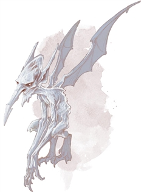

Ice Mephit
Comprising frigid air and water, ice mephits are aloof and cold, surpassing all other mephits in pitiless cruelty.
Mehpits
Mehpits are capricious, imp-like creatures native to the elemental planes. They come in six varieties, each one representing the mixture of two elements.
Ageless tricksters, mephits gather in large numbers on the Elemental Planes and in the Elemental Chaos. They also find their way to the Material Plane, where they prefer to dwell in places where their base elements are abundant. For example, a magma mehpit is composed of earth and fire, and it favors volcanic lairs, while an ice mephit, which is composed of air and water, favors frigid locales.
Elemental Nature. A mephit doesn't require food, drink, or sleep.